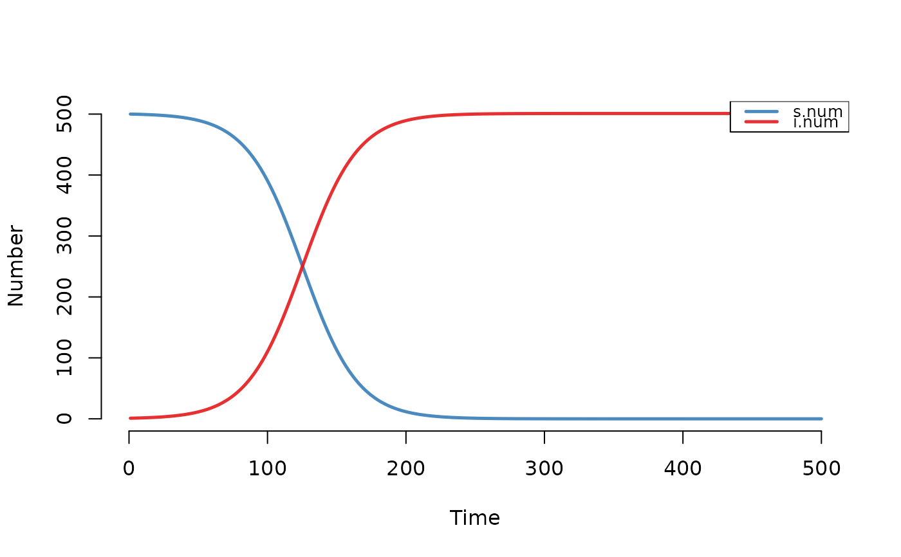
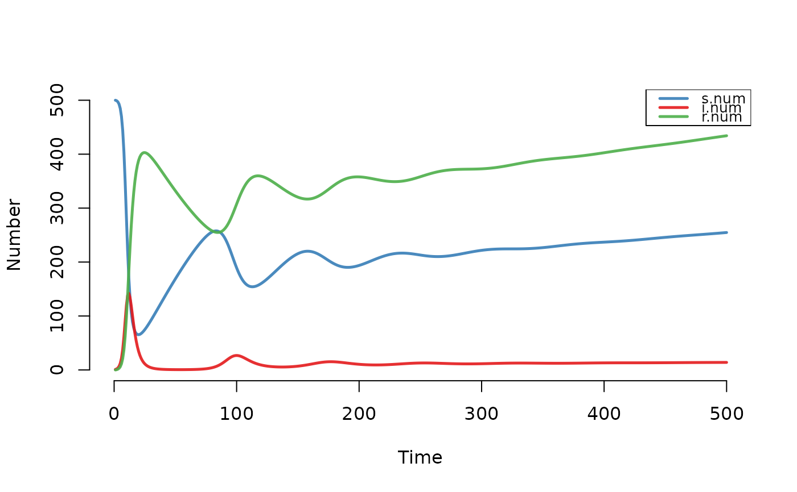
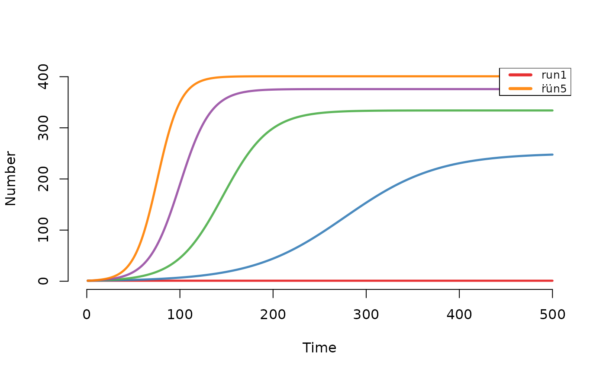
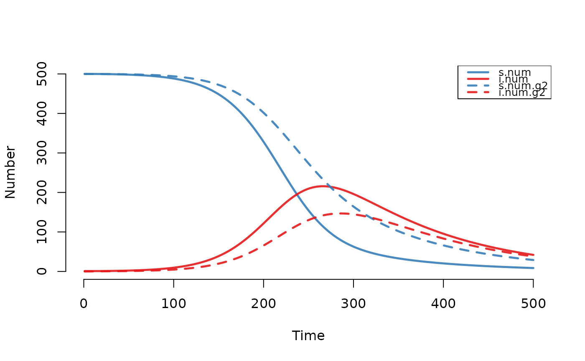

Solves deterministic compartmental epidemic models for infectious disease.
Arguments
- param
Model parameters, as an object of class
param.dcm.- init
Initial conditions, as an object of class
init.dcm.- control
Control settings, as an object of class
control.dcm.
Value
A list of class dcm with the following elements:
param: the epidemic parameters passed into the model through
param, with additional parameters added as necessary.control: the control settings passed into the model through
control, with additional controls added as necessary.epi: a list of data frames, one for each epidemiological output from the model. Outputs for base models always include the size of each compartment, as well as flows in, out of, and between compartments.
Details
The dcm function uses the ordinary differential equation solver in
the deSolve package to model disease as a deterministic compartmental
system. The parameterization for these models follows the standard approach
in EpiModel, with epidemic parameters, initial conditions, and control
settings. A description of solving DCMs with the dcm function may be
found in the Basic DCMs tutorial.
The dcm function performs modeling of both base model types and
original models with new structures. Base model types include one-group
and two-group models with disease types for Susceptible-Infected (SI),
Susceptible-Infected-Recovered (SIR), and Susceptible-Infected-Susceptible
(SIS). New model types may be written and input into dcm following the
steps outlined in the New DCMs
tutorial. Both base and original models require the param,
init, and control inputs.
References
Soetaert K, Petzoldt T, Setzer W. Solving Differential Equations in R: Package deSolve. Journal of Statistical Software. 2010; 33(9): 1-25. doi:10.18637/jss.v033.i09 .
See also
Extract the model results with as.data.frame.dcm.
Summarize the time-specific model results with summary.dcm.
Plot the model results with plot.dcm. Plot a compartment flow
diagram with comp_plot.
Examples
## Example 1: SI Model (One-Group)
# Set parameters
param <- param.dcm(inf.prob = 0.2, act.rate = 0.25)
init <- init.dcm(s.num = 500, i.num = 1)
control <- control.dcm(type = "SI", nsteps = 500)
mod1 <- dcm(param, init, control)
mod1
#> EpiModel Simulation
#> =======================
#> Model class: dcm
#>
#> Simulation Summary
#> -----------------------
#> Model type: SI
#> No. runs: 1
#> No. time steps: 500
#> No. groups: 1
#>
#> Model Parameters
#> -----------------------
#> inf.prob = 0.2
#> act.rate = 0.25
#>
#> Model Output
#> -----------------------
#> Variables: s.num i.num si.flow num
plot(mod1)

## Example 2: SIR Model with Vital Dynamics (One-Group)
param <- param.dcm(inf.prob = 0.2, act.rate = 5,
rec.rate = 1/3, a.rate = 1/90, ds.rate = 1/100,
di.rate = 1/35, dr.rate = 1/100)
init <- init.dcm(s.num = 500, i.num = 1, r.num = 0)
control <- control.dcm(type = "SIR", nsteps = 500)
mod2 <- dcm(param, init, control)
mod2
#> EpiModel Simulation
#> =======================
#> Model class: dcm
#>
#> Simulation Summary
#> -----------------------
#> Model type: SIR
#> No. runs: 1
#> No. time steps: 500
#> No. groups: 1
#>
#> Model Parameters
#> -----------------------
#> inf.prob = 0.2
#> act.rate = 5
#> rec.rate = 0.3333333
#> a.rate = 0.01111111
#> ds.rate = 0.01
#> di.rate = 0.02857143
#> dr.rate = 0.01
#>
#> Model Output
#> -----------------------
#> Variables: s.num i.num r.num si.flow ir.flow a.flow
#> ds.flow di.flow dr.flow num
plot(mod2)

## Example 3: SIS Model with act.rate Sensitivity Parameter
param <- param.dcm(inf.prob = 0.2, act.rate = seq(0.1, 0.5, 0.1),
rec.rate = 1/50)
init <- init.dcm(s.num = 500, i.num = 1)
control <- control.dcm(type = "SIS", nsteps = 500)
mod3 <- dcm(param, init, control)
mod3
#> EpiModel Simulation
#> =======================
#> Model class: dcm
#>
#> Simulation Summary
#> -----------------------
#> Model type: SIS
#> No. runs: 5
#> No. time steps: 500
#> No. groups: 1
#>
#> Model Parameters
#> -----------------------
#> inf.prob = 0.2
#> act.rate = 0.1 0.2 0.3 0.4 0.5
#> rec.rate = 0.02
#>
#> Model Output
#> -----------------------
#> Variables: s.num i.num si.flow is.flow num
plot(mod3)

## Example 4: SI Model with Vital Dynamics (Two-Group)
param <- param.dcm(inf.prob = 0.4, inf.prob.g2 = 0.1,
act.rate = 0.25, balance = "g1",
a.rate = 1/100, a.rate.g2 = NA,
ds.rate = 1/100, ds.rate.g2 = 1/100,
di.rate = 1/50, di.rate.g2 = 1/50)
init <- init.dcm(s.num = 500, i.num = 1,
s.num.g2 = 500, i.num.g2 = 0)
control <- control.dcm(type = "SI", nsteps = 500)
mod4 <- dcm(param, init, control)
mod4
#> EpiModel Simulation
#> =======================
#> Model class: dcm
#>
#> Simulation Summary
#> -----------------------
#> Model type: SI
#> No. runs: 1
#> No. time steps: 500
#> No. groups: 2
#>
#> Model Parameters
#> -----------------------
#> inf.prob = 0.4
#> act.rate = 0.25
#> a.rate = 0.01
#> ds.rate = 0.01
#> di.rate = 0.02
#> inf.prob.g2 = 0.1
#> a.rate.g2 = NA
#> ds.rate.g2 = 0.01
#> di.rate.g2 = 0.02
#> balance = g1
#>
#> Model Output
#> -----------------------
#> Variables: s.num i.num s.num.g2 i.num.g2 si.flow a.flow
#> ds.flow di.flow si.flow.g2 a.flow.g2 ds.flow.g2 di.flow.g2
#> num num.g2
plot(mod4)
